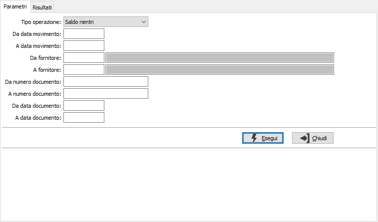
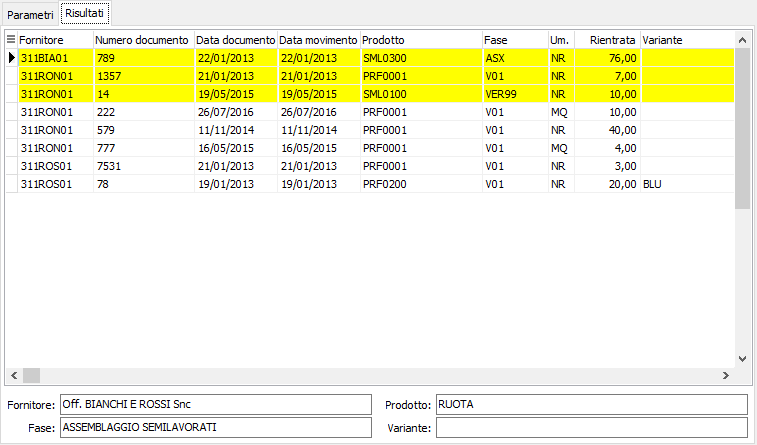

Saldo fatturazione rientri
La funzione consente di eliminare logicamente dalla fatturazione eventuali DDT di rientro dal terzista che non devono essere fatturati; è possibile anche effettuare l'annullamento del saldo modificando il tipo operazione; l'annullamento sarà possibile solo per i Ddt di rientro che sono stati precedentemente saldati con questa procedura.
Nei parametri è possibile selezionare i Ddt di rientro per data di rientro, fornitore ed estremi del documento.

La pagina dei Risultati riporta in una griglia i Ddt di rientro e per ognuno sono riportati i dati di base e le quantità versate.

Da questa pagina è possibile effettuare il saldo dei Ddt, o l'annullamento dello stesso se si è effettuata l'elaborazione per l'annullamento, con il doppio clic del mouse oppure tramite il menù contestuale accessibili tramite il tasto destro del mouse sulla griglia.
Per rendere effettivo la registrazione, è necessario confermare premendo il bottone Salva o il tasto funzione F10.